画面案だけ（アプリには入れない）。押すと HTML が開きます。?night=1 で夜。写真は 390×844 と 375×667（-667）
出発の印から8時間、ホームのシートのいちばん上。別の空港の範囲に入ったら「到着印を押す」を大きく
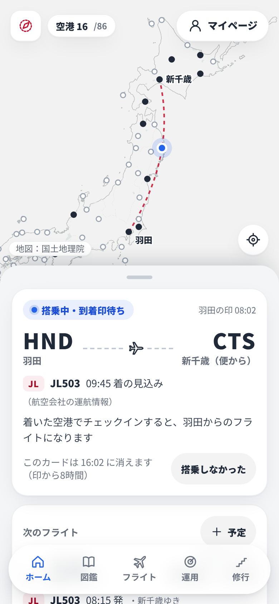
G1 搭乗中・到着印待ち（便が分かる）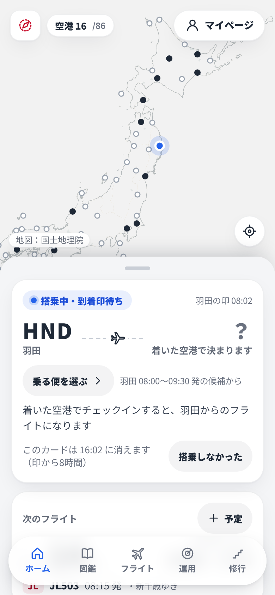
G1b 搭乗中・便が分からない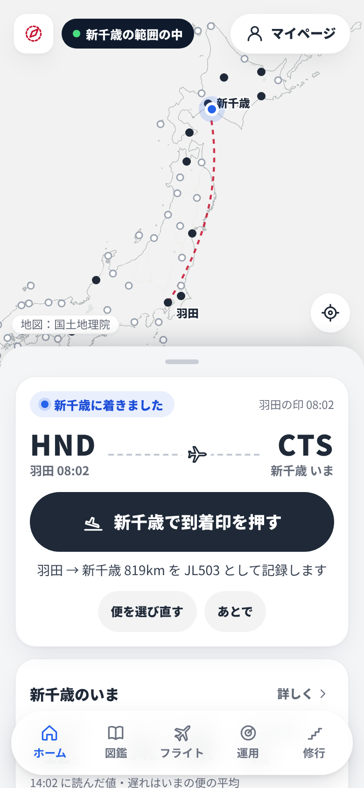
G2 別の空港に着いた・到着印を大きく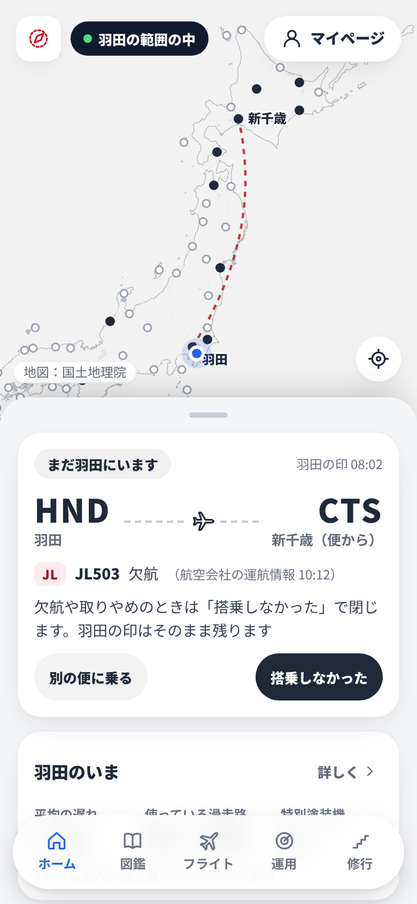
G3 同じ空港に戻った・欠航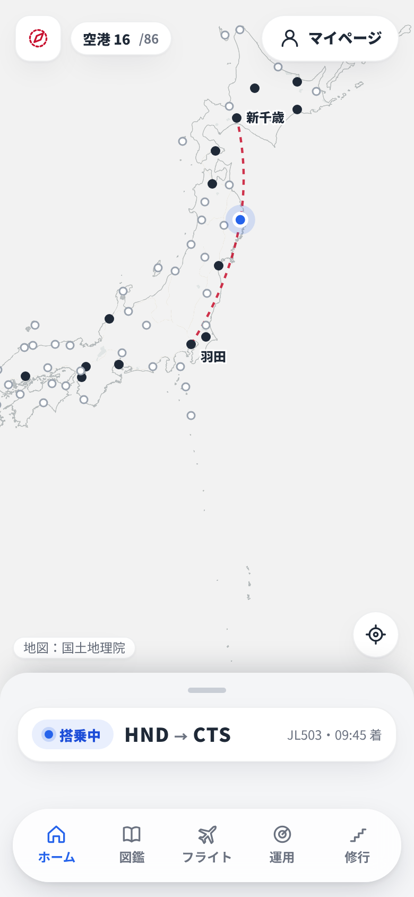
G4 シート小のとき何の場所かを1行＋どうすると埋まるか1行＋押すもの1つ。E0 が今の文と案の表
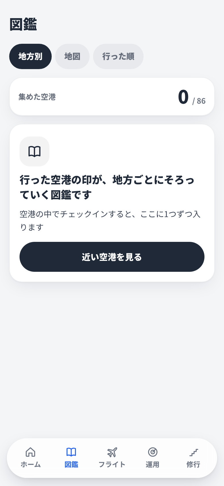
E1 図鑑・0件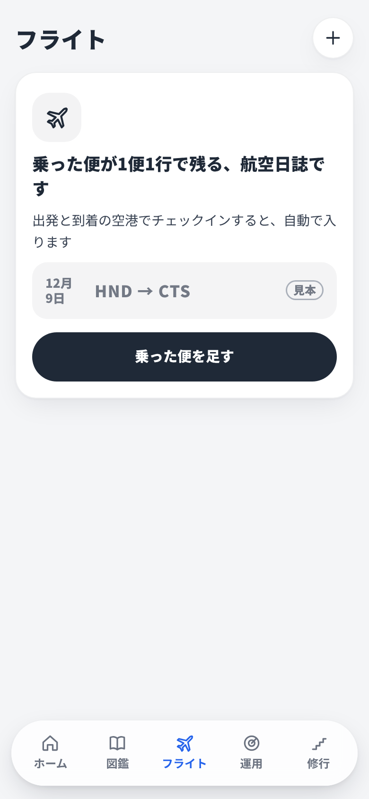
E2 フライト・0件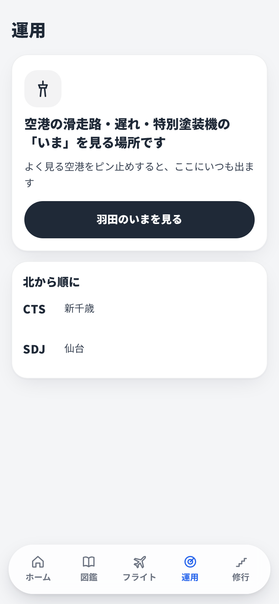
E3 運用・ピン止めなし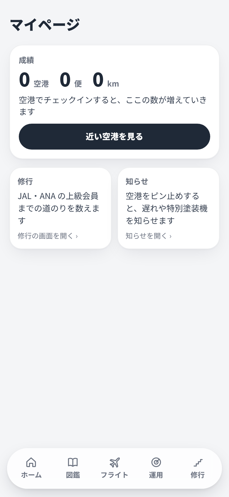
E4 マイページ・0件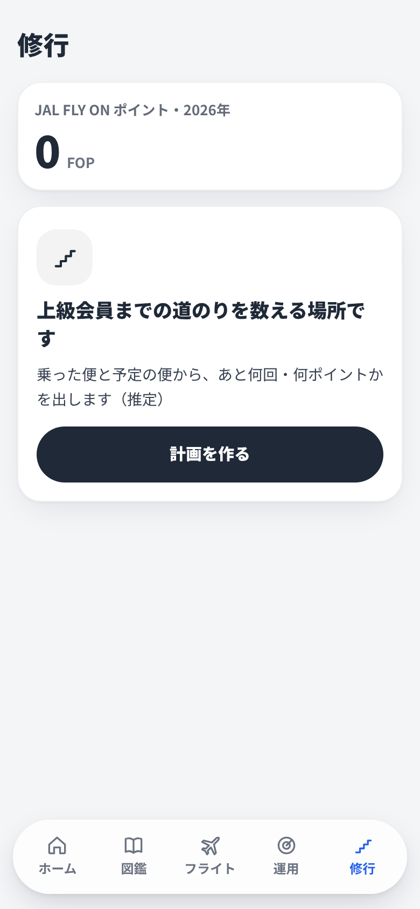
E5 修行・0件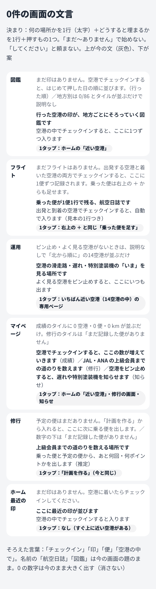
E0 0件の文言の表（今と案）C1 が今の色の測り（4.5:1 の目安）と案、C2 が色だけにしない見本
マイページの目次の最後に1行。3択＋自由文、位置は送らない
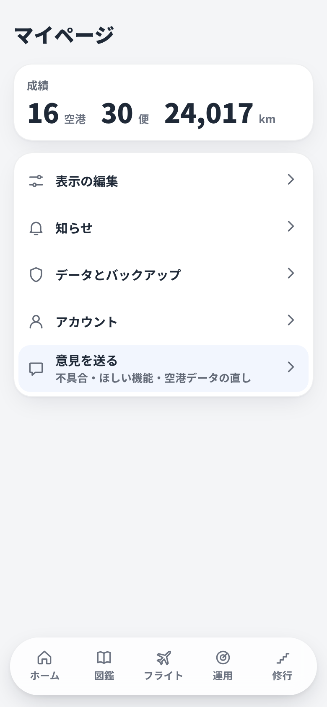
F1 マイページの入口（目次の最後）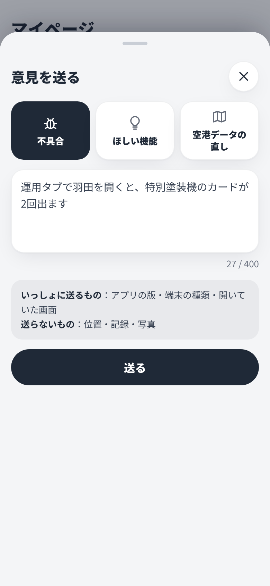
F2 意見を送る（不具合）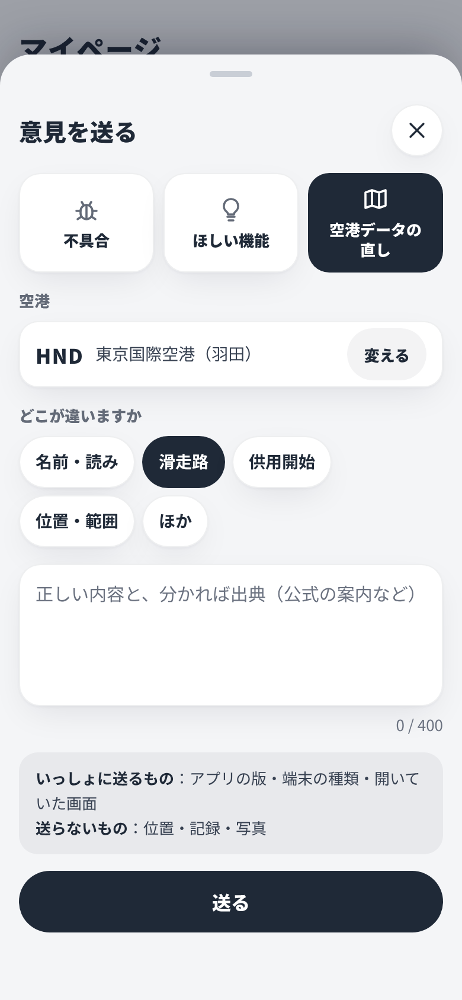
F3 空港データの直し（空港ページから）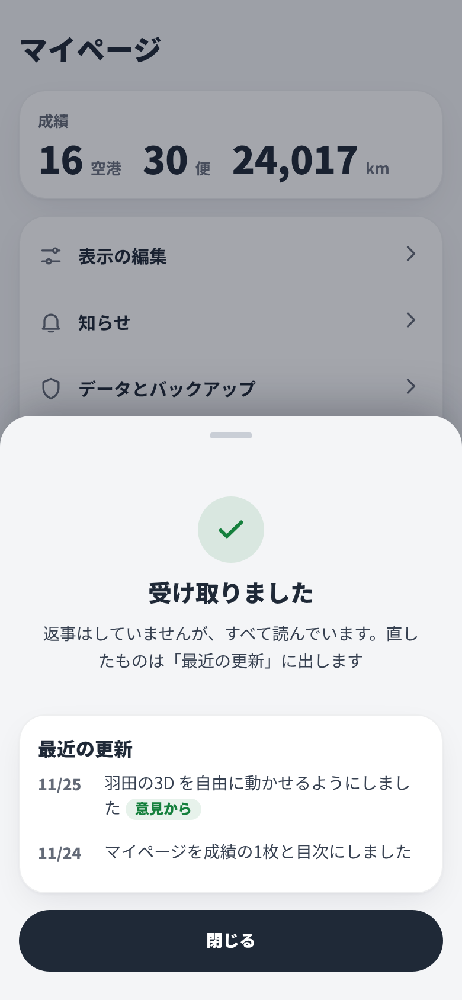
F4 送ったあと今のカードに「通算14回目・23日ぶり」の1行を足すだけ（印をもらったときのカード 案B にはもう入っている）